展开章节菜单
封面、目录与出版信息
全国优秀教材特等奖
义务教育教科书
查看教材原页（保留全部图片、注音与原始排版）

义务教育教科书
查看教材原页（保留全部图片、注音与原始排版）
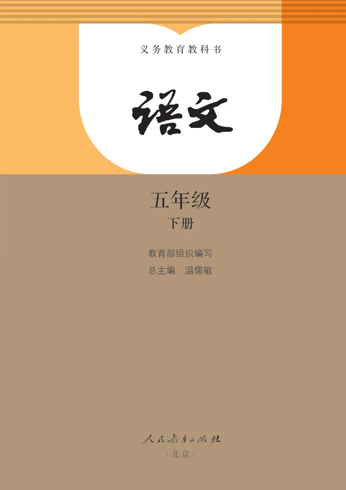
总 主 编：温儒敏小学主编：陈先云（执行） 曹文轩 崔 峦 李吉林编写人员：（以姓氏笔画为序）何 源 余 琴 张 沛 陆 云陈先云 郑 宇 柳美彤 温儒敏责任编辑：柳美彤 张 沛 郑 宇美术编辑：何安冉
（北京市海淀区中关村南大街17 号院1 号楼 邮编：100081）
定价批号：××号
如发现内容质量问题，请登录中小学教材意见反馈平台：jcyjfk.pep.com.cn如发现印、装质量问题，影响阅读，请与××× 联系调换。电话：×××-××××××××
查看教材原页（保留全部图片、注音与原始排版）
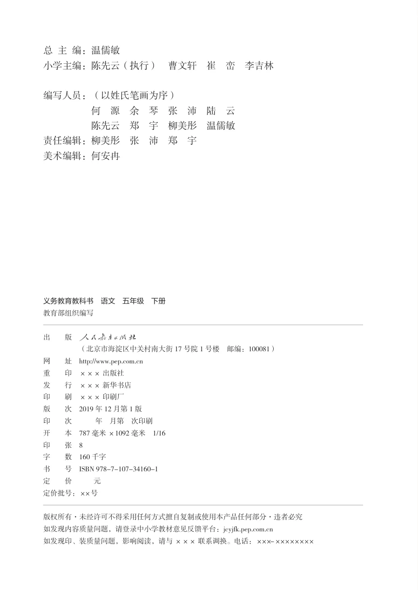
目录
第一单元.......................................1
古诗三首....................................2
四时田园杂兴（其三十一）.....2
读古典名著，品百味人生...39
第三单元......................................41
村晚........................................3
*
梅花魂.......................................10
*
第四单元......................................53
古诗三首...................................54
第二单元......................................17
草船借箭...................................18
景阳冈.......................................22
11 军神...........................................59
猴王出世...................................28
12 清贫...........................................63
*
*
红楼春趣...................................31
*
了.......................65
查看教材原页（保留全部图片、注音与原始排版）
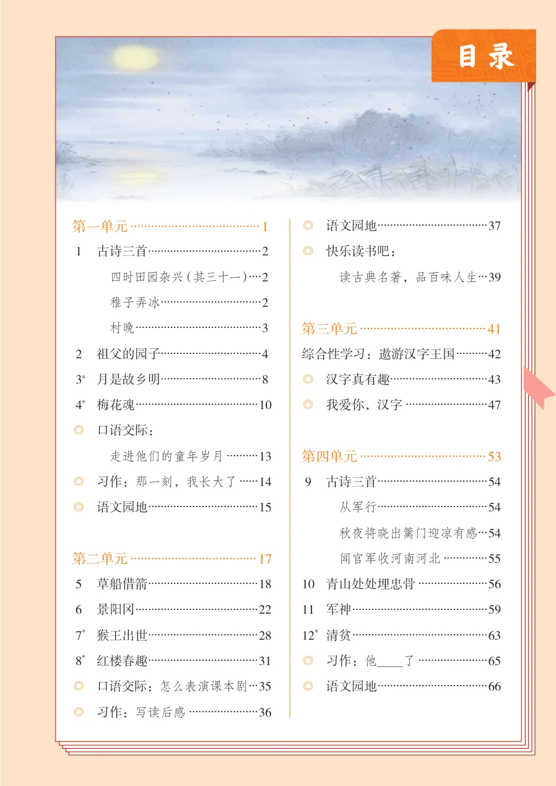
不可思议的金字塔..............100
他像一棵挺脱的树...............71
◎ 口语交际：我是小小讲解员....103
◎ 习作：中国的世界文化遗产...104
第五单元......................................69
20 金字塔.......................................99
*13 人物描写一组...........................70
金字塔夕照...........................99摔跤.......................................70
两茎灯草...............................7214 刷子李.......................................74
第八单元.....................................107我的朋友容容.......................78小守门员和他的观众们.......80
21 杨氏之子..................................108
22 手指..........................................109
23 童年的发现..............................112
*第六单元......................................8315 自相矛盾...................................8416 田忌赛马...................................8517 跳水...........................................87
识字表..............................................119
写字表..............................................121
词语表..............................................123第七单元......................................93
19 牧场之国...................................97
查看教材原页（保留全部图片、注音与原始排版）
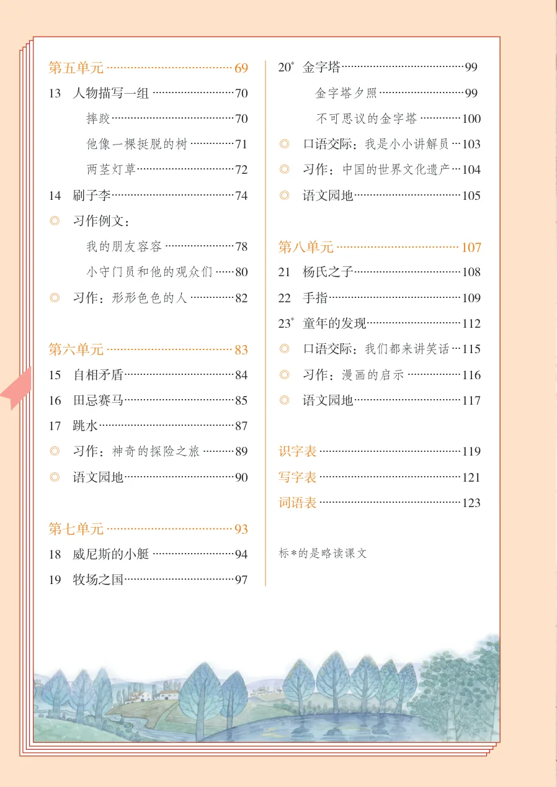
第1单元 · 童年往事：学习活动与拓展
第一单元
每一个人都有他自己的童年往
事，快乐也好，辛酸也好，对于他
都是心动神移的最深刻的记忆。
—冰心
查看教材原页（保留全部图片、注音与原始排版）
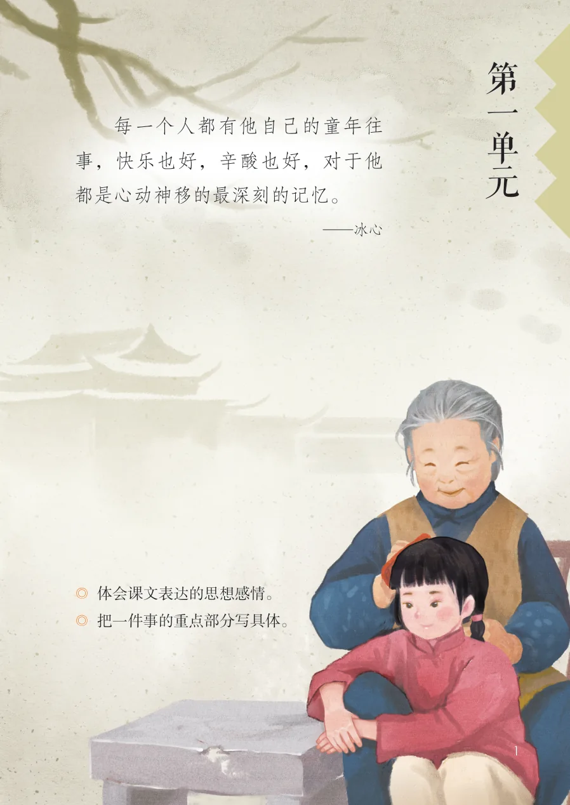
走进他们的童年岁月
童年是纯真、难忘的岁月，每个人都有自己的童年。你知道大人们的童年
是什么样的吗？让我们走进他们的童年岁月，了解他们小时候的故事。
不同的对象，列出问题清单。下面两个问题清单供你参考。
问题清单二
问题清单一
课文？
喜欢它？
……
……
可以从不同方面提问，也可以围绕一个话题提出多个问题。
要认真、耐心地听别人讲话，一边
听一边作简要的记录，不要随意打断别
人，不明白的地方或感兴趣的内容可以
适当追问。
查看教材原页（保留全部图片、注音与原始排版）
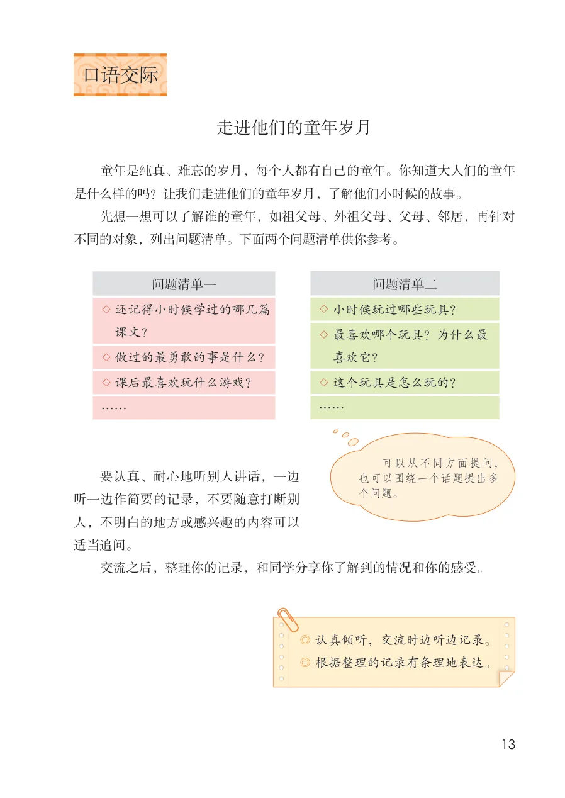
习 作
那一刻，我长大了
翻阅影集、日记……回忆自己成长的历程，有没有某一个时刻、某一件事情让你突然觉得自己长大了？
皱纹……
球鞋，我感觉手上沉甸甸的……
们鼓励的目光，我又有了信心……
写清楚，还要把感到自己长大了的“那一刻”的情形写具体，记录当时的真实感受。题目自拟。
的意见进行修改。
查看教材原页（保留全部图片、注音与原始排版）
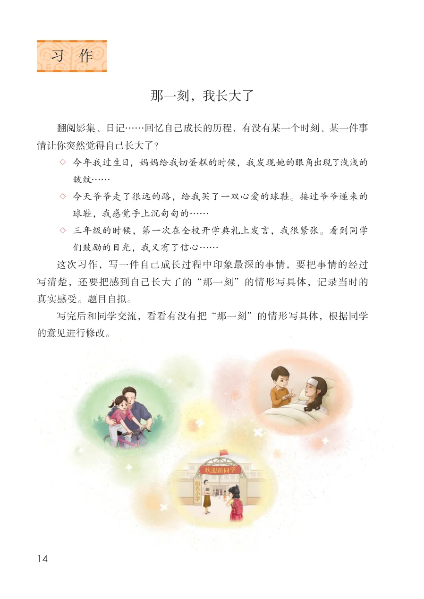
读到《月是故乡明》中“我的小月亮，我永远忘不掉你”
这句话时，我能直接感受到作者对故乡深深的怀念之情。
读《祖父的园子》时，我从描写园子里的花草、虫
“我”对祖父和园子深沉的爱与怀念。
我在读《月是故乡明》时，把自己想象成文中的“我”，
说一说。
蝠不敢从黑暗的地方飞出来。
何是好。
查看教材原页（保留全部图片、注音与原始排版）
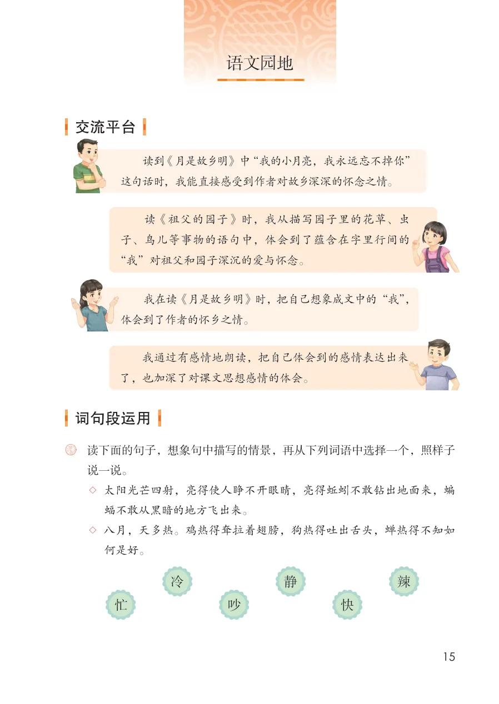
顷的大海中，在巍峨雄奇的高山上，我都看到过月亮。……对比之下，
我感到这些广阔世界的大月亮，无论如何比不上我那心爱的小月亮。
姑爹的小渔船仍然是那么亲切，那么难忘……
日积月累
游子吟
慈母手中线，
游子身上衣。
临行密密缝，
意恐迟迟归。
谁言寸草心，
报得三春晖。
查看教材原页（保留全部图片、注音与原始排版）
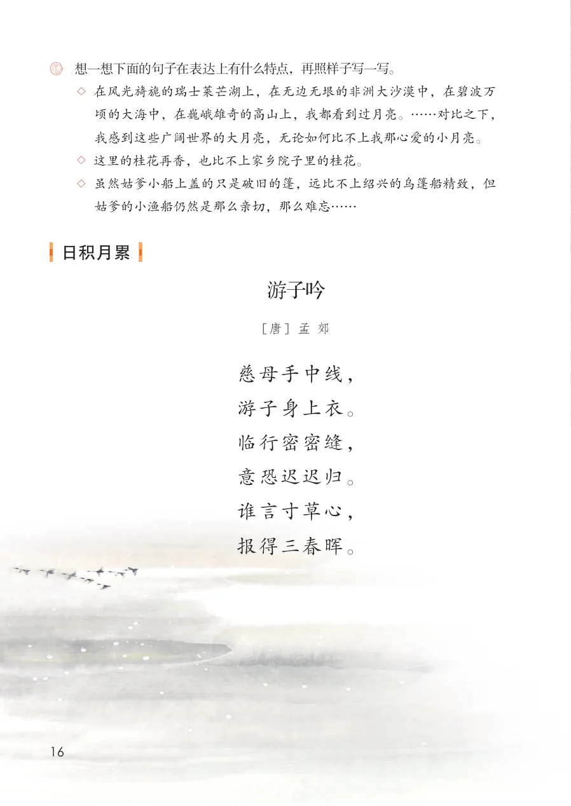
第2单元 · 古典名著之旅：学习活动与拓展
第二单元
观三国烽烟，识梁山好汉，
叹取经艰难，惜红楼梦断。
查看教材原页（保留全部图片、注音与原始排版）
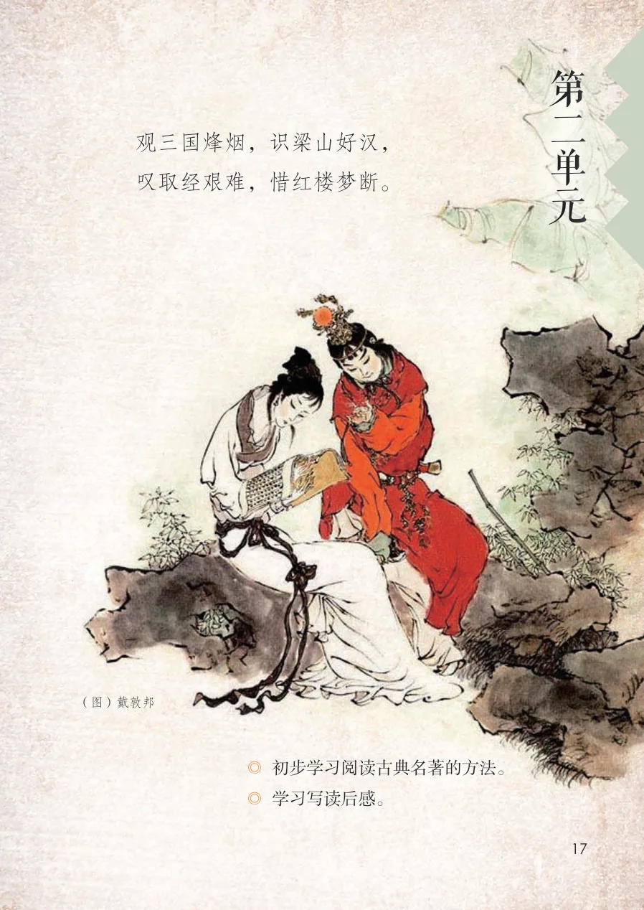
怎么表演课本剧
漫长悠久的岁月，大千世界的风景，性格迥异的人物，各具特色的故事，
都可以浓缩在课本剧中。在那里，我们可以尽情展示自己，重现课文中精彩的
情节。
述的语言改为人物的对话，表演时可以加上哪些表
情和动作。此外，还可以想想需要准备哪些服装和
道具。
要认真听取别人的意见。意见不同时，要一起协商，形成一致的看法。
查看教材原页（保留全部图片、注音与原始排版）
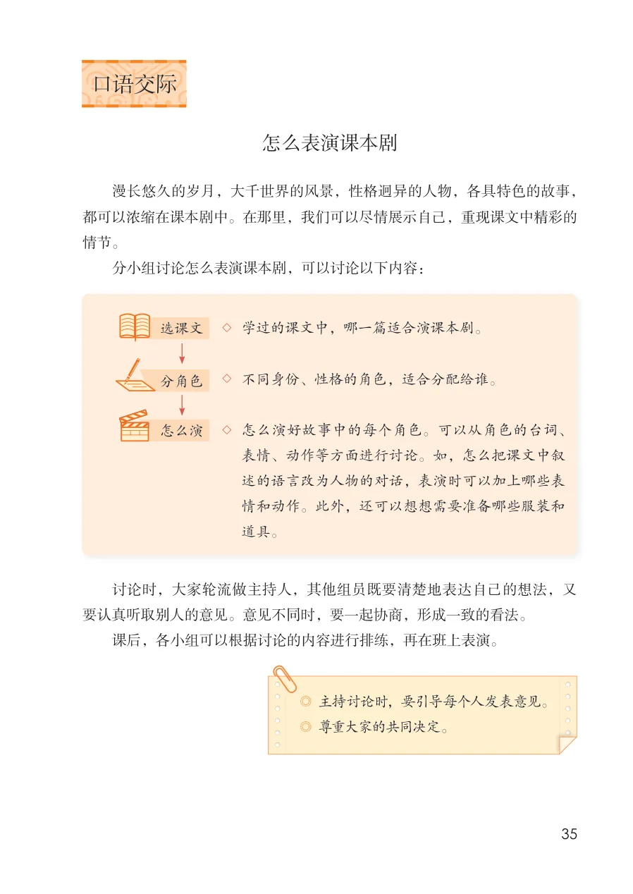
习 作
写读后感
我们读一篇文章或一本书，往往会有自己的感想。有时一些人物会给你留下很深的印象，如安徒生童话中的小人鱼；有时一些情形会让你受到触动，如《祖父的园子》中“我”跟着祖父学种菜的温馨情景；有时文字中蕴含的道理会让你深受启发，如《铁杵成针》揭示的做事要有恒心的道理。把读一篇文章或一本书的感想写下来，就是读后感。
选择读过的一篇文章或一本书，写一篇读后感。先简单介绍一下文章或书的内容，可以重点介绍你印象最深的部分。再选择一两处你感触最深的内容，写出自己的感想，感想要真实、具体。可以联系自己的阅读积累和生活经验，也可以引用原文中的个别语句。
题目可以是“读《×××》有感”或“《×××》读后感”，也可以将它作为副标题，再自拟主标题。写完后读一读，看看有没有把自己的感想表达清
查看教材原页（保留全部图片、注音与原始排版）
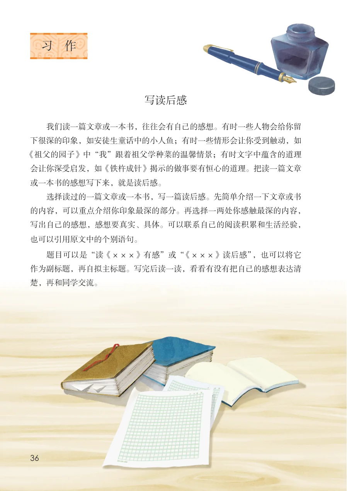
本单元的课文内容理解起来有些难度，如果掌握一些
方法，阅读起来就能更加顺畅，也能更有收获。
可以联系上下文猜测语句的意思。如《猴王出世》中
的“每受天真地秀，日精月华，感之既久，遂有灵通之意”，
联系上文的“仙石”，我大致猜到这句话在讲仙石很有灵性。
遇到一些较难理解的语句，不用反复琢磨，如《红楼
春趣》中“剪子股儿、籰子”等词语，只要知道是与风筝
有关的物品就行了。
读《景阳冈》的时候，我借助资料对武松有了更多的
了解，也有了阅读古典名著的兴趣。
我结合看过的电影、电视剧，加深了对课文的理解，
得到了更多阅读的乐趣。
你能猜出下面词语的大致意思吗？
查看教材原页（保留全部图片、注音与原始排版）
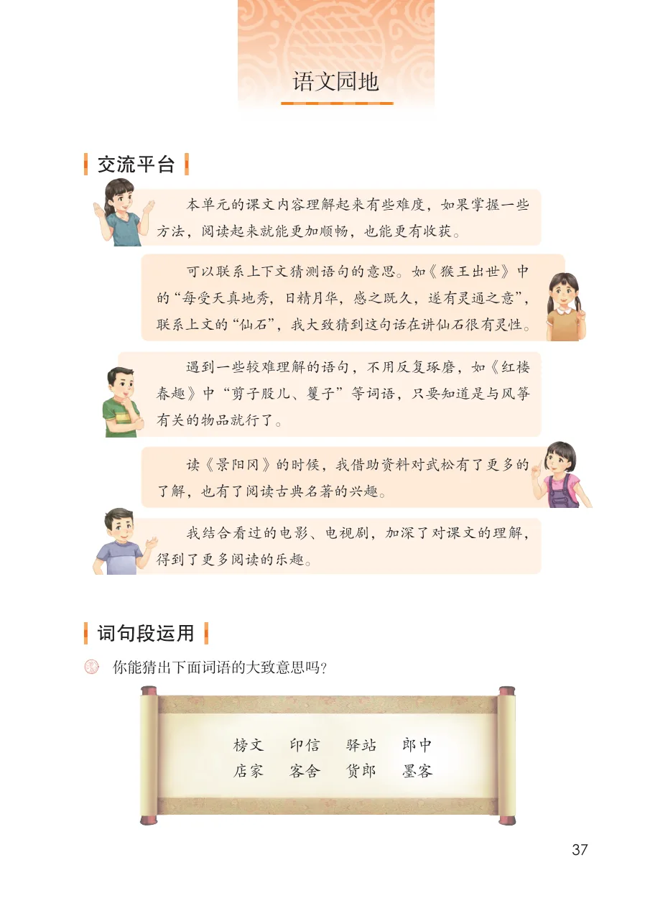
3 。
3 ，急抽身往外便走，复瞑目蹲身
3 ，跳出水外。
3 。一个个序齿排班
3 ，朝上礼拜，都称“千岁
大王”。下面的句子描写的都是本单元课文中的人物，读一读，猜猜写的是谁，说
说你的理由。
称。一双怪眼似明星，两耳过肩查又硬。
阔，有万夫难敌之威风；语话轩昂，吐千丈凌云之志气。
人闲桂花落，
夜静春山空。
月出惊山鸟，
时鸣春涧中。
查看教材原页（保留全部图片、注音与原始排版）
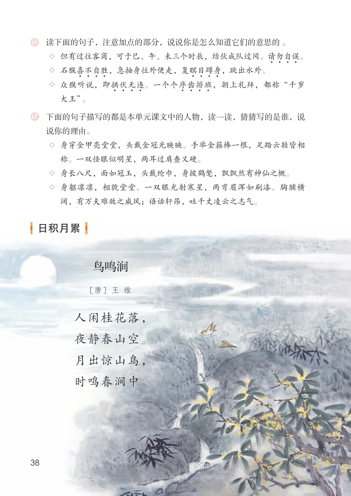
读古典名著，品百味人生
诸葛亮足智多谋，李逵鲁莽刚猛，孙悟空神通广大，林黛玉多愁善感……
让我们一起漫步中国古典名著长廊，走近这些人物，品读精彩故事。
你读过吗
漫漫取经路上，有妖魔鬼怪，有刀山火海，也有师徒四人坚定的背影和永
不停歇的脚步。让我们随着唐僧、孙悟空、猪八戒和沙僧的脚步，体验《西游
记》中险境迭出的取经之旅。三打白骨精、大战红孩儿、女儿国遇险、真假美
猴王、三借芭蕉扇……一个个扣人心弦的故事会吸引我们一口气读下去。
请看第六十一回“猪八戒助力败魔王，孙行者三调芭蕉扇”中，神通广
大的孙悟空与同样变化多端的牛魔王斗法的精彩情形。
这大圣收了金箍棒，捻诀念咒，摇身一变，变作一个海东青，飕的一
翅，钻在云眼里，倒飞下来，落在天鹅身上，抱住颈项嗛眼。那牛王也知
是孙行者变化，急忙抖抖翅，变作一只黄鹰，返来嗛海东青。行者又变作
一个乌凤，专一赶黄鹰。牛王识得，又变作一只白鹤，长唳一声，向南飞
去。行者立定，抖抖翎毛，又变作一只丹凤，高鸣一声。那白鹤见凤是鸟
王，诸禽不敢妄动，刷的一翅，淬下山崖，将身一变，变作一只香獐，乜
乜些些，在崖前吃草。行者认得，也就落下翅来，变作一只饿虎，剪尾跑
蹄，要来赶獐作食。魔王慌了手脚，又变作一只金钱花斑的大豹，要伤饿
虎。行者见了，迎着风，把头一幌，又变作一只金眼狻猊，声如霹雳，铁
额铜头，复转身要食大豹。牛王着了急，又变作一个人熊，放开脚，就来
擒那狻猊。行者打个滚，就变作一只赖象，鼻似长蛇，牙如竹笋，撒开鼻
子，要去卷那人熊。
查看教材原页（保留全部图片、注音与原始排版）
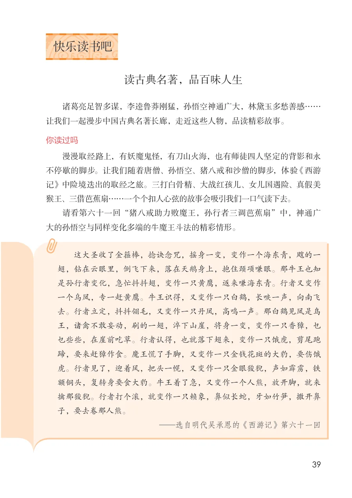
作者用生动的语言将这激烈的场面描写得动人心魄，快翻开《西游记》，看看更多精彩的故事吧！
古代长篇小说多是章回体。这些作品里，一回或若干回组成一个相对完整的小故事，连起来就串成了一个长篇故事。
我很喜欢读回目，只要看一下某一回的标题，就可以猜出它主要讲了什么故事。
相信你可以读更多
还有很多中国古典名著等着我们去阅读。
煮酒论英雄、火烧赤壁、千里走单骑……无论是气势磅礴的战争场面，还是运筹帷幄的谋略，我们都能在《三国演义》中读到，从中领略历史的风云变幻。
鲁智深倒拔垂杨柳，吴用智取生辰纲，宋江率军三打祝家庄……《水浒传》中到处都是英雄的豪情壮志。
宝玉和众人结社赋诗，恣意畅快；黛玉葬花，凄美缠绵；湘云醉卧芍药丛，娇憨烂漫……在《红楼梦》里，既有家族盛衰、世事变迁，也有命运沉浮、人情冷暖。
查看教材原页（保留全部图片、注音与原始排版）
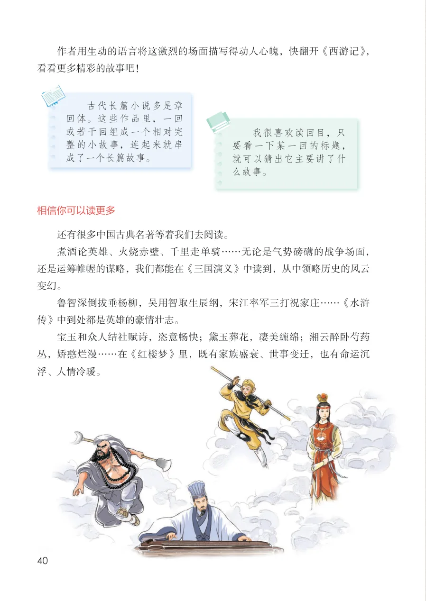
第3单元 · 遨游汉字王国：学习活动与拓展
第三单元
横竖撇捺有乾坤，
一笔一画成文章。
查看教材原页（保留全部图片、注音与原始排版）
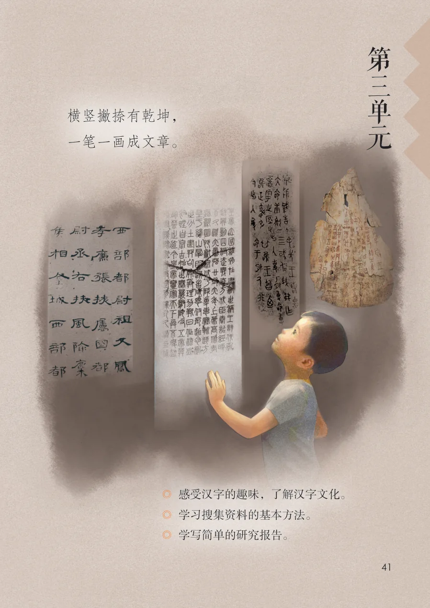
我们平时读书、看报、写文章，都离不开汉字。你对汉字有哪些了解？
漫长的演变过程，沿用至今。
的文化产生过重要影响。
名的书法家，他们的书法作品是艺术中的珍品。
……
起遨游汉字王国，感受汉字的趣味，了解汉字文化，并为汉字的规范使用做一些力所能及的事情。
查看教材原页（保留全部图片、注音与原始排版）
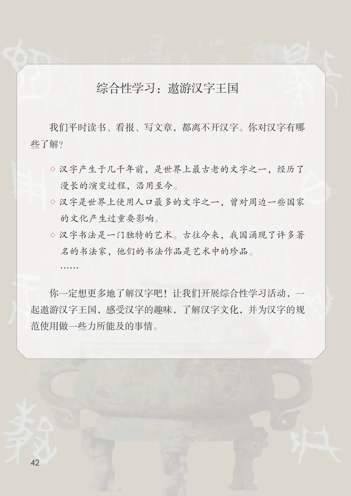
真
字
有
汉
趣
活动建议
中选择一项，制订活动计划，根据计划开展活动。“阅读材料”供
参考。
1. 想想谁可能会有自己需要的资料。
2. 想好问题，请教合适的人。
2. 检索后的条目很多，可以根据题目、显示的内容等，判断哪些是需要的资料。
2.书名、目录、内容简介等，能帮助我们大致判断书中是否有自己需要的内容。
查看教材原页（保留全部图片、注音与原始排版）
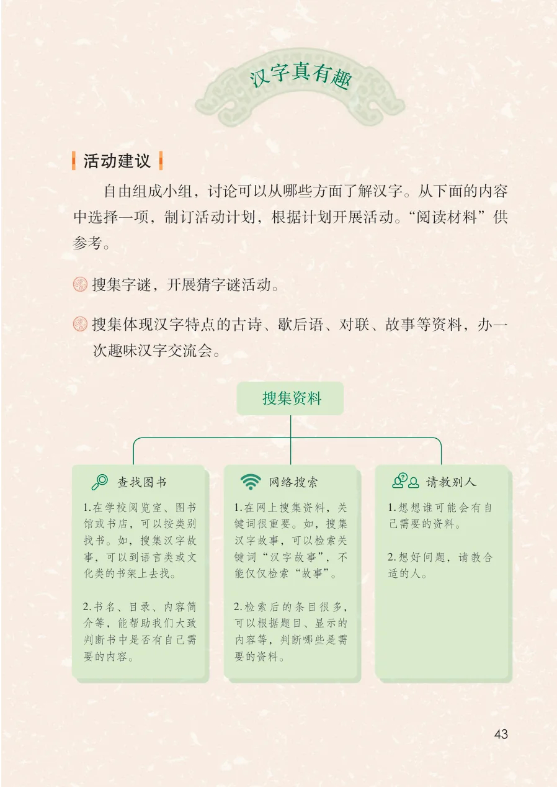
1 字谜七则
阅读材料
黑狗，十分可爱。唐伯虎对人们说：“这是一则字谜，想购买者，需要付三十两银子，如果猜中谜语，就分文不收。”大半天过去了，无人猜中。这时，有一位年轻人说：“我猜中了。”唐伯虎请他说出谜底，他却笑而不答，取下画来便走。
唐伯虎望着这位年轻人的背影，哈哈一笑，说：“猜中了！他猜中了！”
你能猜出这是什么字吗？
查看教材原页（保留全部图片、注音与原始排版）
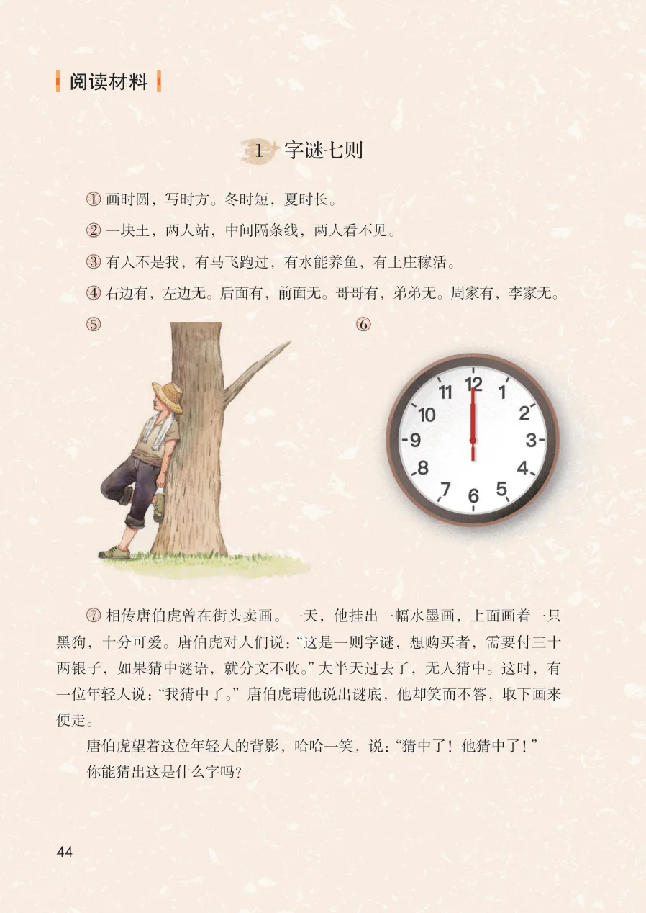
2 门内添“活”字
传说东汉时的杨修是猜谜高手。有一次，曹操命人造一座花园，花园造好
之后，曹操去看，也没说好坏，随手在花园的门上写了一个“活”字。众人不解
其意，于是去请教杨修。杨修心领神会，对众人说：“门内添‘活’字，乃‘阔’字
也，丞相是嫌你们把花园的门造得太宽大了。”众人听后便把花园的门重修了，曹
操见后非常高兴。
3 有意思的谐音
4 “枇杷”和“琵琶”
古时候，有人送枇杷给朋友，可他在礼单上把“枇杷”错写成了“琵
琶”。朋友笑道：“‘枇杷’不是此‘琵琶’，只恨当年识字差！”旁边有人应声
道：“若使琵琶能结果，满城箫管尽开花。”
查看教材原页（保留全部图片、注音与原始排版）
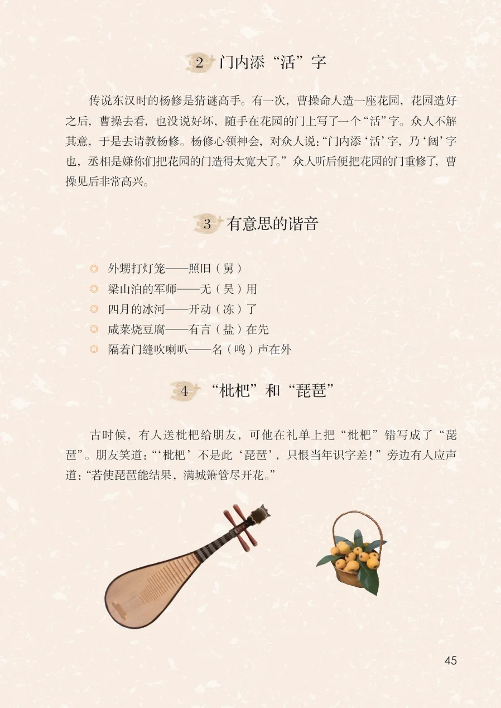
5 有趣的形声字
在汉字王国里，形声字是重要的一员。数千年来，我们的祖先不断地创造形声字，光是在甲骨文中，就有许多象形字向形声字演变的例子。
这是星星的“星”。天上三光日月星，在甲骨文里，日和月都只用一个形体来表示，星星的特点是数量多，所以一开始用三个相同的形体来表示，以便跟日、月相区别。但问题是，这些简单的形体能表示的事物太多了，三块石头、三个拳头……谁说一定就是星星呢？于是，古人就在原来的字形上加了一个声符“生”。强化了字音，就能把“星”和其他事物区分开来了。
这是凤凰的“凤”，繁体字写作“鳳”。凤凰是古代传说中的神鸟，它的样子有点儿像今天的孔雀，头上有冠，身后拖着漂亮的长尾巴。尽管如此，表示“凤”与表示其他鸟的字形也较难分清。古人想出了办法：在原来的字形上增加了一个部件“凡”，用来标示字音。这样一来，“凤”字有了声符
“凡”，原来的象形字就变成了形符，是不是象凤凰之形，已经变得不重要了。
“星”和“凤”有共同的特点：它们原来都是象形字，有着鲜明的图画文字特征。汉字毕竟不是绘画，而是文字符号，字形经过演变，象形的特征一旦弱化，就不容易辨认出来了。因此，古人在象形字的基础上增加声符，创造了新的形声字。
还有一种形声字，是在象形字的基础上增加形符创造出来的。
你猜到了吗？这是蜀国的“蜀”。相传古蜀国有一位先祖，名叫蚕丛，是养蚕的专家。“蜀”字最开始就是蚕的象形，上部像蚕首，下部像蚕蜷曲的身子。但这个字与其他象形字的区分度还不够大，古人给它增加了一个部件“虫”，强化了它的类别。有了“虫”充当形符，原来的象形字就自然而然变为声符了。
你看出来了吗？这是祭祀的“祭”。最早的字形描述古代的血祭，画的是一只手杀牲祭祀，把血滴在盆里。后来古人觉得这样表意还不够充分，就给它增加了表示祭祀的部件“示”。这样，就产生了一个“示”充当形符、原来的象形字变为声符的形声字。
形声字是不是很有趣？
查看教材原页（保留全部图片、注音与原始排版）
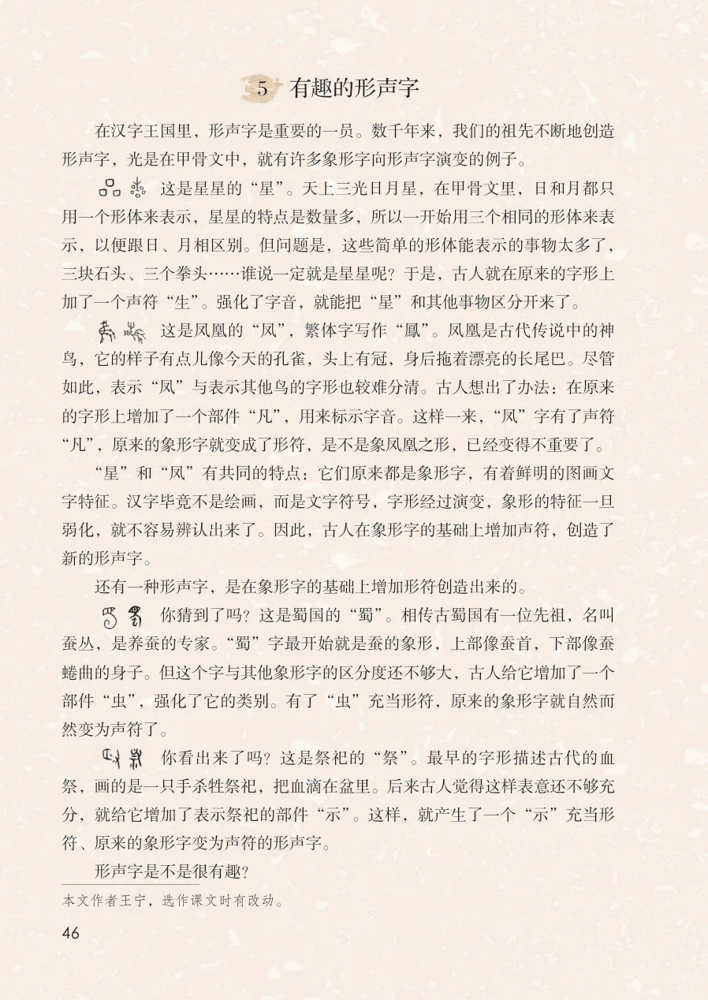
你
，
爱
汉
我
字
汉字有着悠久的历史，蕴含着丰富的文化。我们每天都在学习
和使用汉字，应该增进对汉字的了解，为汉字的规范使用做一些力
所能及的事情。从下面的内容中选择一项开展活动，写一份简单的
研究报告。“阅读材料”供参考。
汉字有关的内容，开展简单的研究。
调查同学的作业本、街头招牌、书籍报刊等，围绕生活中用字
不规范的情况，开展简单的研究。
查看教材原页（保留全部图片、注音与原始排版）
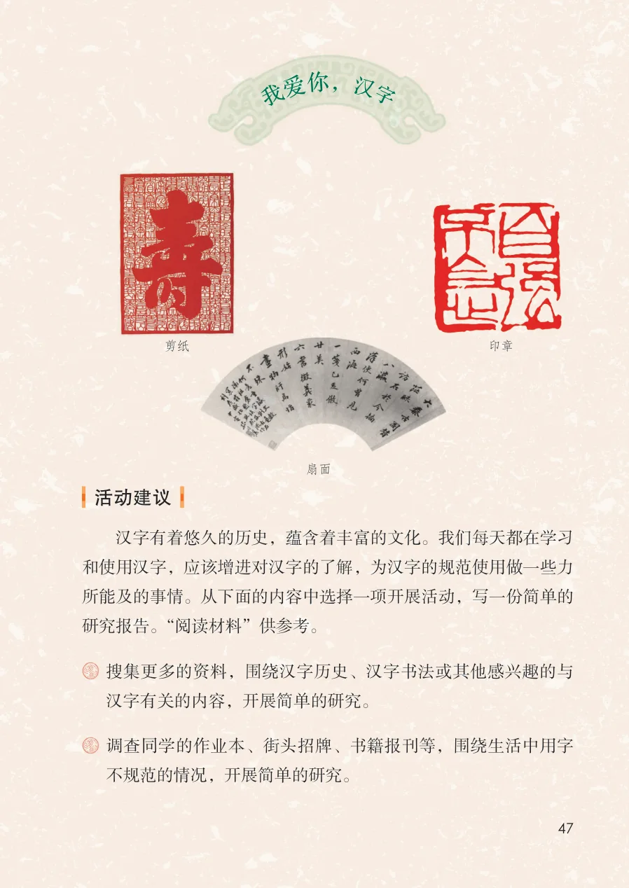
1 汉字字体的演变
阅读材料
甲骨文
金 文
小 篆
汉字已经有三四千年的历史。在漫长的发展演变过程中，字体发生了很大变化，其中以甲骨文、金文、小篆、隶书、楷书五种字体最为典型。
甲骨文是刻在龟甲或兽骨上的文字，主要在商周时期使用，它是我们目前所能见到的最早的成熟汉字。已经出土的单字有四千多个，其中已经认出的有一千多个，主要记录祭祀、战争、狩猎、农事、气象等内容。字形的象形性较强，写法也不固定，如，“田”字可以写作、、、、、。由于是刀刻，字的线条比较纤细。
金文是铸刻在铜器上的文字，主要在商周时期使用。字的线条粗壮，早期部分字形的象形性还很明显，西周晚期之后，字形逐渐规整、美观。有些字形繁简差别很大，如，“车”字早期一般写作、、、，看上去很烦琐，中晚期一般写作、，与现在的繁体字“车”差别不大。
小篆是从战国时期的秦国文字发展而来的，秦统一全国后得到推行，成为我国最早的统一的文字。小篆字形结构稳定，线条圆转，粗细基本一致，象形意本文是自编课文。
查看教材原页（保留全部图片、注音与原始排版）
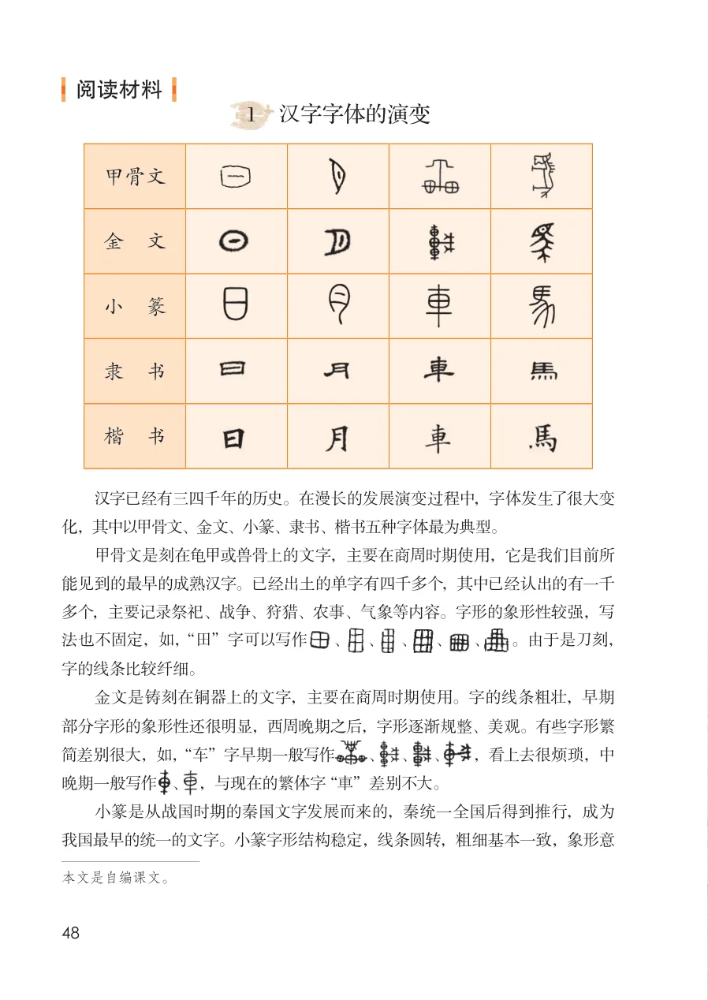
味不明显。今天的书法作品，特别是印章中仍然较多地使用这种字体。
隶书形成于战国晚期，通行于两汉。它将篆书圆转的线条改为直笔或方笔，
象形意味已基本消失，笔画简化，书写方便，汉字的点、横、竖、撇、捺等基本
笔画已经形成，成为汉字发展史上的分水岭。
魏晋时期有了楷书。“楷”是规矩、楷模的意思。楷书字形方正，笔画规整
平直，比隶书更加便于书写和认读。进入南北朝之后，楷书成为占主导地位的字
体，一直通行至今。
2 甲骨文的发现
十九世纪七八十年代，河南安阳小屯村的村民在田间劳作时，发现一些
带有刻痕的龟甲、兽骨，称它们为龙骨。他们不知道这是古代的遗物，将较
大的龙骨卖给了药铺，将小的龙骨丢弃了。药铺将龙骨碾成粉末用作治疗创
伤的药材。龙骨上的刻痕因无人知道是极有价值的殷商时期的刀刻文字，而
常被村民打磨掉。
1899年，一次偶然的机会，这些龟甲、兽骨上的刻痕，引起了清代国子监
主管官员王懿荣的注意。王懿荣平时酷爱收藏古董，精通金石之学
研究，他认为这些龙骨上的刻痕是一种比篆书更早的文字。
后来，人们把刻在龟甲或兽骨上的文字叫作甲骨文，我国学术领域由此又
多了一门新学科，叫“甲骨学”。
① 〔国子监〕我国古代最高的教育管理机关，有的朝代兼为最高学府。
② 〔 金石之学〕以古代铜器、石刻及其上面的文字为研究对象的学科。
查看教材原页（保留全部图片、注音与原始排版）
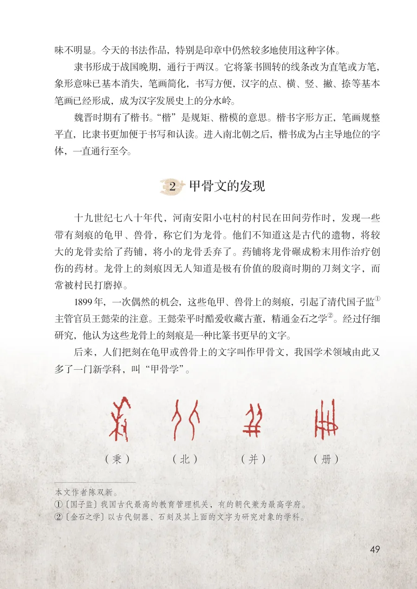
3 书法欣赏
明代文征明行草《千字文》（局部）南朝智永楷书《千字文》（局部）唐代怀素草书《千字文》（局部）
天地玄黄，宇宙洪荒。日月盈昃，辰宿列张。寒来暑往，秋收冬藏。闰余成岁，律吕调阳。云腾致雨，露结为霜。金生丽水，玉出昆冈。剑号巨阙，珠称夜光。果珍李柰，菜重芥姜。
我国是一个多民族、多语言、多文种的国家，……制定国家通用语言文字法，用法律的形式确定普通话和规范汉字作为国家通用语言文字的地位，规定国家通用语言文字的使用范围，有利于语言文字的社会应用，有利于各民族之间的交往，有利于促进民族团结，维护国家统一。
查看教材原页（保留全部图片、注音与原始排版）
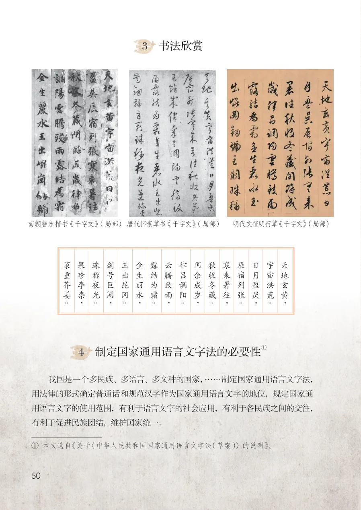
5 关于“李”姓的历史和现状的研究报告
研究报告的标题要体现研究的主要内容。
一、问题的提出
我们学校有不少同学姓李，我有好几个邻居也姓
写出研究目的。
李。“李”姓是怎么来的？历史上姓李的名人有哪些？
现在的“李”姓是不是我国人口最多的姓氏？带着这
些问题，我对“李”姓的历史和现状作了一次研究。
1.查阅书籍和报刊。
写清楚研究方法。
2.询问身边的人。
3.其他方法。
传说皋陶曾任尧帝的大理官（掌管刑罚的官职），其子孙以官名“理”为姓氏。后来的“李”姓大多来源于此。唐代时，“李”为国姓。一些姓徐、安、杜、郭、麻、鲜于的武将，因立功被皇帝赐“李”姓。
战国时期的李冰父子主持修建了都江堰水利工程；汉代的李广抗击匈奴，威名远扬；隋代的李春是著名的桥梁专家，举世闻名的赵州桥就是他设计并参加建造的；唐代的李白被誉为“诗仙”；宋代的李清照是一
本文是自编课文。
查看教材原页（保留全部图片、注音与原始排版）
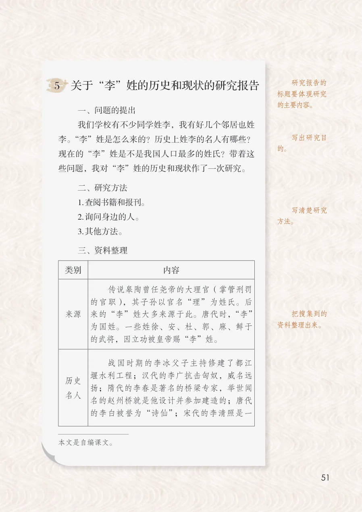
续表
类别内容
位词人，有“千古第一才女”之称；明代的李时珍编写了我国古代药物学巨著《本草纲目》；近现代的李大钊是中国共产党的创始人之一……
历史
名人
据统计，2018年全国户籍人口中，王、李、张、刘、陈五个姓氏的数量占据前五名。其中，“王”姓和“李”姓的数量均超过一亿，并且“王”姓比“李”姓略多。
现状
1. 传说，“李”姓来源于上古时代的官名。唐代
时，有些姓氏改为“李”姓，这可能为后来“李”姓
人口的增长奠定了基础。
2. 历史上，“李”姓名人辈出。有水利专家李冰对资料进行简要的概括和分析。
父子、军事将领李广、桥梁专家李春、“诗仙”李白、
他们在各个领域都闪耀着光芒。
3. 2018 年，我国户籍人口最多的姓氏是“王”
姓，“李”姓排名第二。
查看教材原页（保留全部图片、注音与原始排版）
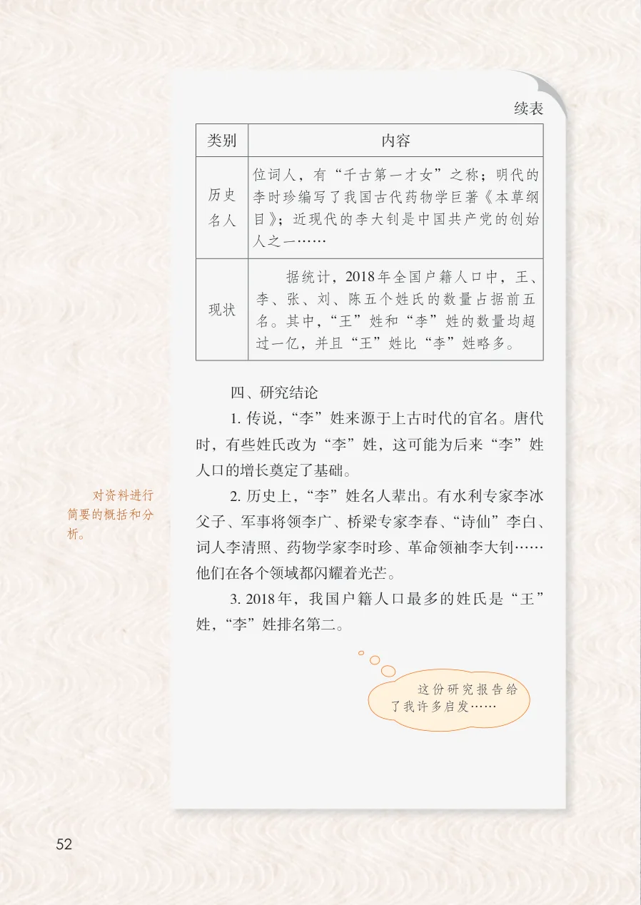
第4单元 · 家国情怀：学习活动与拓展
第四单元
苟利国家生死以，
岂因祸福避趋之。
— [清] 林则徐
现人物的内心。
查看教材原页（保留全部图片、注音与原始排版）
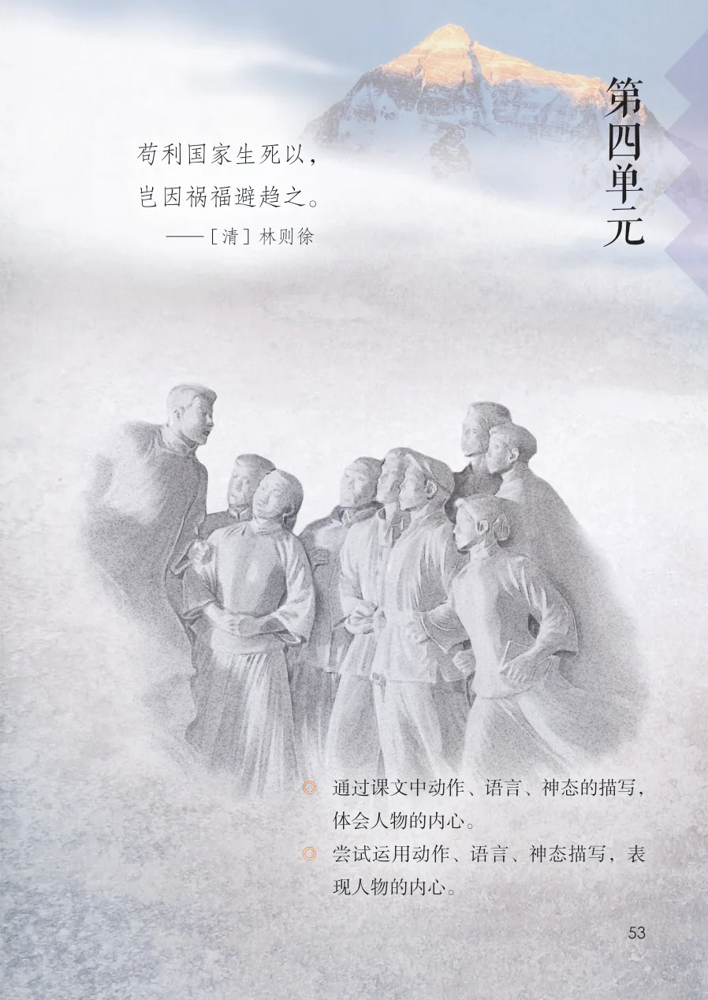
习 作
他了
生活中，谁陶醉、生气或伤心时的样子让你印象深刻？把题目补充完整，
如“他陶醉了”“他生气了”“他伤心了”。回想一下，当时发生了什么事？事
情的前因后果是什么？把这件事写下来，特别要把这个人当时的表现写具体，
反映出他的内心。
他的眼睛闪着奇异的光芒，面孔因为激动而涨得通红，嘴里不停
地说：“太美了！真是太美了！”他根本没听见周围喧闹的声音，整个
世界对他来说好像都消失了。一个小时过去了，两个小时过去了，他
痴痴地站在那里，一动不动地凝望着这座雕像……
我们可以从多个角度写一个人当时的表现，如：
的内心，然后对不满意的地方进行修改。
查看教材原页（保留全部图片、注音与原始排版）
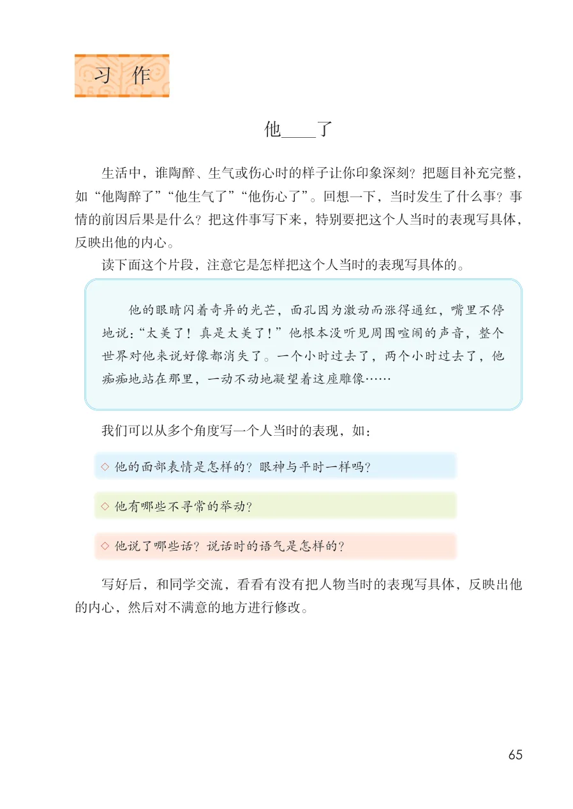
内容的理解，是一种很好的阅读方法。
如《军神》一文，从刘伯承平静地回答沃克医生的话“眼睛离脑子太
近，我担心施行麻醉会影响脑神经。而我，今后需要一个非常清醒的大
脑”，我们可以感受到刘伯承顽强的意志和坚定的信念。
此外，课文着力刻画了沃克医生的一系列变化，从“冷冷地问”到
“目光柔和下来”，再到“脸上浮现出慈祥的神情”，我们能感受到他对
刘伯承从冷漠到赞许、钦佩的内心变化。
地吸着烟。
说：“参谋长，请把这个任务交给我吧！”
了一下，又说：“孩子们，我给大家分菜，每人一筷子。”
“同志们……”停
查看教材原页（保留全部图片、注音与原始排版）
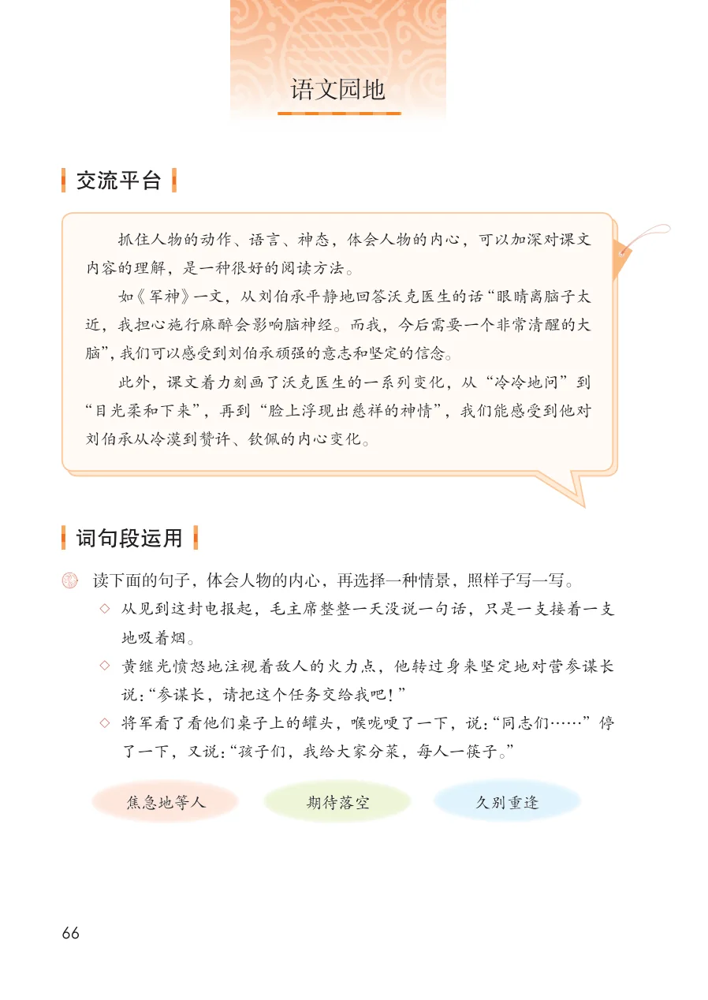
说一说。
汗珠滚滚，护士帮他擦了一次又一次。
胸口总像是被什么堵住了似的，白天心神不宁，晚上也无法入睡。
书写提示
目的位置。
查看教材原页（保留全部图片、注音与原始排版）
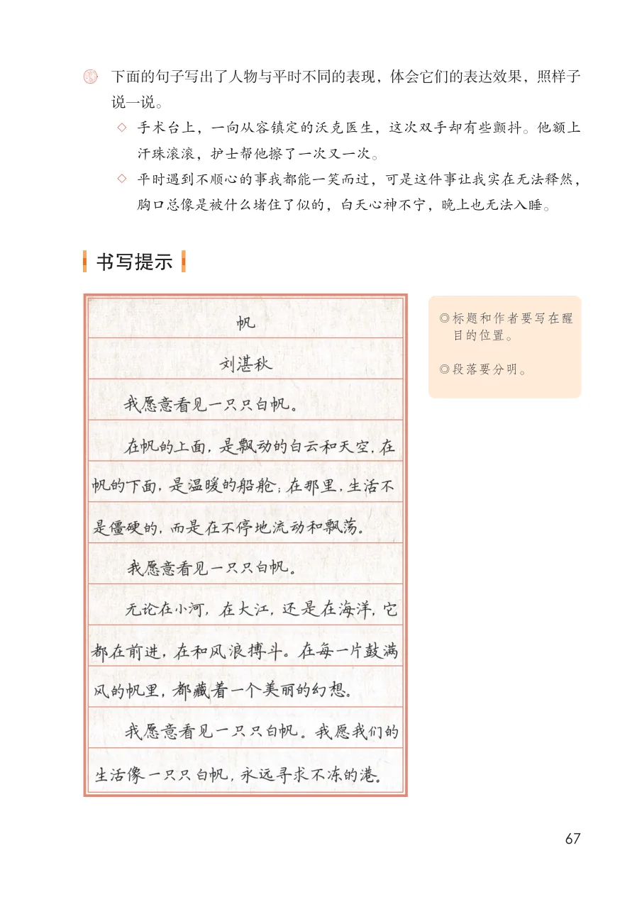
日积月累
凉州词
[唐] 王之涣
黄河远上白云间，
一片孤城万仞山。
羌笛何须怨杨柳，
春风不度玉门关。
故人西辞黄鹤楼，
烟花三月下扬州。
孤帆远影碧空尽，
唯见长江天际流。
查看教材原页（保留全部图片、注音与原始排版）
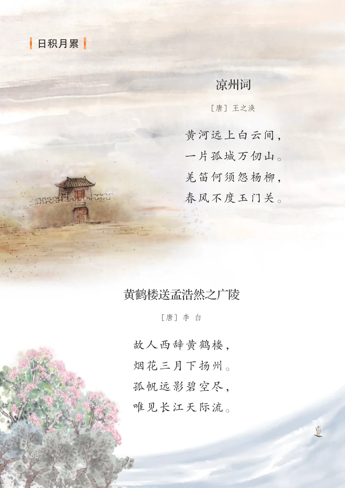
第5单元 · 人物描写：学习活动与拓展
第五单元
字里行间众生相，
大千世界你我他。
具体地表现一个人的特点。
查看教材原页（保留全部图片、注音与原始排版）
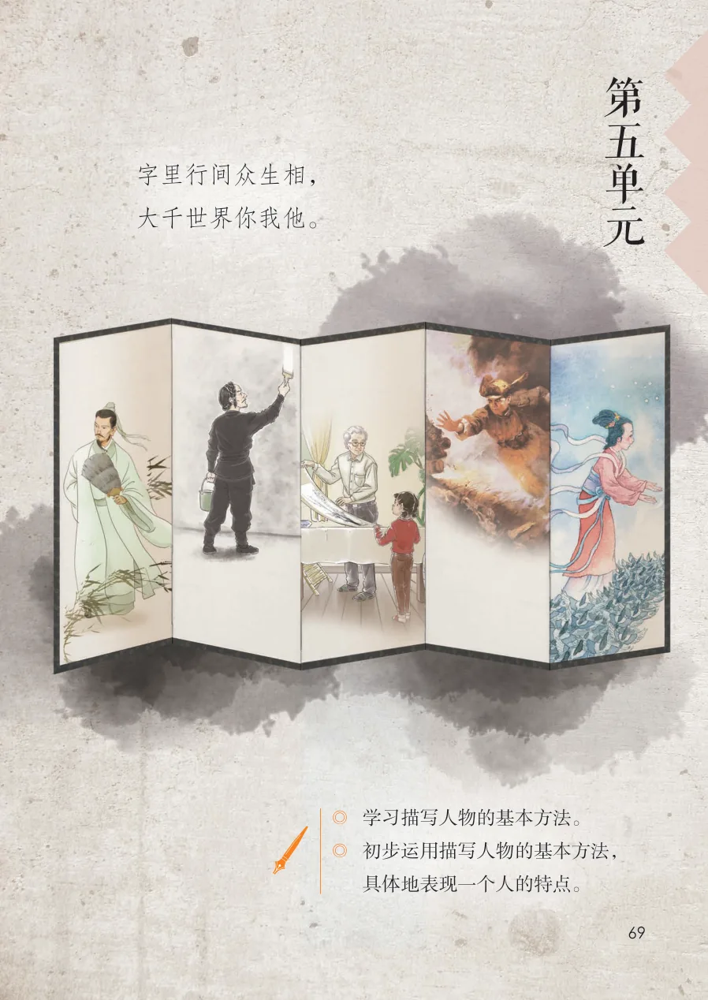
我的朋友容容
我的朋友容容是一个助人为乐的人。
我订了一份报纸，每天早上，容容总是搬着椅子，爬课文细致地描写了容容的动作，表现了她取报纸的不容易。
上去，踮
起脚，从大门口的邮箱里取出报纸来，然后爬下
椅子，奔来把报纸交给我：“任
叔叔，报纸来啦！”
不知从什么时候开始，这已经成了她的习惯，而且她
认为这是一项“权利”，是绝不能让别人侵犯的。
有一天，我忘了尊重她的权利，自己去把报纸取来了。
我正在看报，容容走来，她看
起嘴，
看我手里的报纸，忽然噘
挺委屈地走了。过了一会儿，
哄的声音。起初我没在意，后
容容一天没有取到报纸就发脾气，这个事例体现了她“忠于职守”。
有些关系，过去一打听，果然，
她是为了报纸的事在发脾气。
我连忙把报纸送回大门口去。
容容就不哭了，又搬着椅子去
把报纸取来交给我，才又高兴
起来。容容就是这么忠于职守。
一天我下班回家，容容给
我拿来一封信，是我的一个老
同学从外地寄来的。容容似乎
查看教材原页（保留全部图片、注音与原始排版）
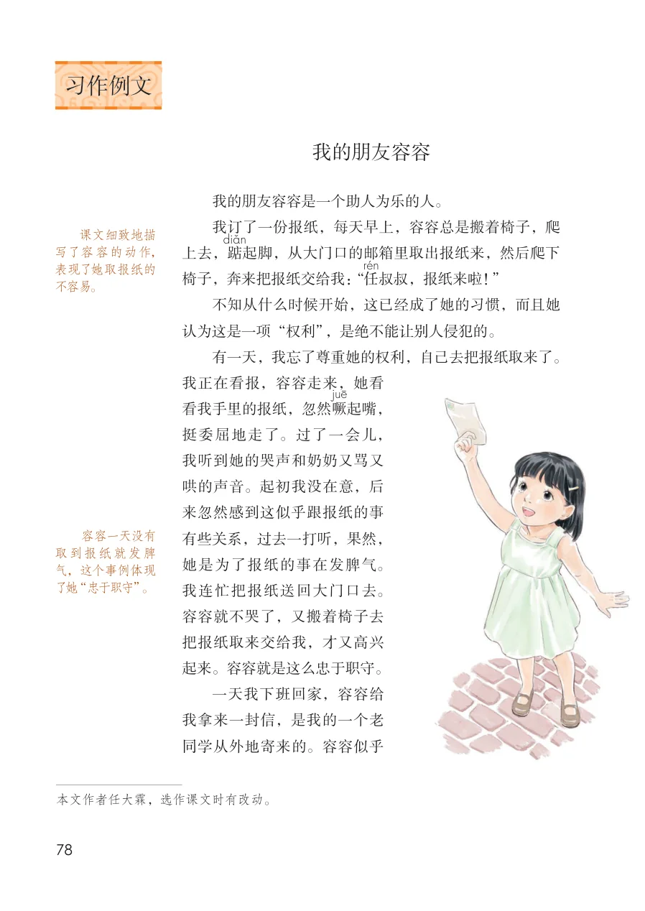
对信产生了浓厚的兴趣，等我看完信，她好奇地问：“任叔
叔，这是什么？”
“这是信。”
“信是什么？”
“信就是信。譬如说，我有个好朋友，我有话跟他讲，
我就可以写一封信寄给他。信封上写个名字，就可以寄了。”
“那么我也可以寄信给好朋友吗？”
“当然可以，如果你有好朋友的话。”我笑着说。
“就拿这样的信封寄吗？”
容容追问“我”的话，显露出她的天真、好奇。
“对！”
“到哪儿去寄呢？”
“往邮筒里一塞就行。我们大门外边不
就有个邮筒吗？”
“知道啦！知道啦！”她高兴地说。
不知什么时候，她把我的信封拿去玩
了，我也没在意。不料过了一天，邮递员通
知我说有一封“欠资待领”的信，叫我到邮
局去领。我连忙上邮局付了邮资，领出信来
一看，啊，原来又是那位老同学寄来的。这
家伙开什么玩笑，信封上贴了张用过的旧邮
票。拆开信一看，啊？难道他疯了？信封里
连半张纸也没有，却装着一片梧桐树叶。真
是奇怪！我把叶子翻来覆去看了半天，怎么
也猜不出它藏着什么奥妙。
我十分纳闷。回到家里，容容却跟在我旁边，老用一
种异样的眼光看着我，似乎准备告诉我什么秘密。过了一
查看教材原页（保留全部图片、注音与原始排版）
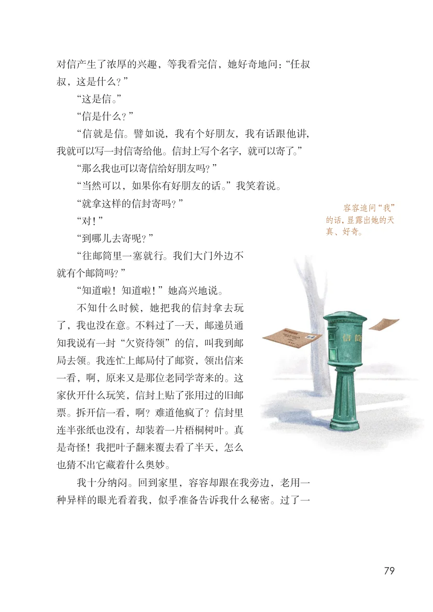
容容的动作、神态和她忍不住告诉“ 我”的话，突显了她的可爱。
会儿，她似乎忍不住了，就拉住我，在我耳边轻轻地说：
“任叔叔，我告诉你，我给你寄了一封信！真正的信！”
“什么？”我好奇地问。
“我今天给你寄了一封信，就用那个信封寄的。里面
藏着一片叶子……”
不等她说完，我就大笑起来，几乎把肚子都笑疼了。
原来那封“欠资待领”的信就是她寄的啊！
好处。
放学以后，孩子们又来到这片空地。他们分成两拨儿，
把书包和帽子堆起来当球门，就摆开阵势赛起来。小弟弟小
妹妹被吸引过来了，路过的大个子叔叔也坐到场边，欣赏他
们这场球赛。
看那个留平头的小守门员，他身着深蓝色的运动衣，浅课文对小守门员穿着的描写，符合他的身份；对他动作、神态的描写，表现出他是个尽责的守门员。
蓝色的短裤，脚穿运动鞋，戴着手套。只见他分腿弯腰，上
身前倾，目光警惕
地注视着前方，膝盖磕破了也毫不在意，
真像个专业的足球守门员！他想着自己可千万不能大意，绝
不让对手冲破最后一道防线。站在小守门员身后的，是个腆
着肚子的小男孩。他好像是候补的，一心想着快点儿上场，
好显一显身手，扑住几个险球。
比赛进入白热化阶段，小守门员和观众们紧紧盯着球场
中的足球。那个戴红帽子的小女孩生怕别人挡住她，往外探
着身子。那个扎蝴蝶结的女孩索性站了起来。搂着小弟弟的
本文由人民教育出版社小学语文室编写。
查看教材原页（保留全部图片、注音与原始排版）
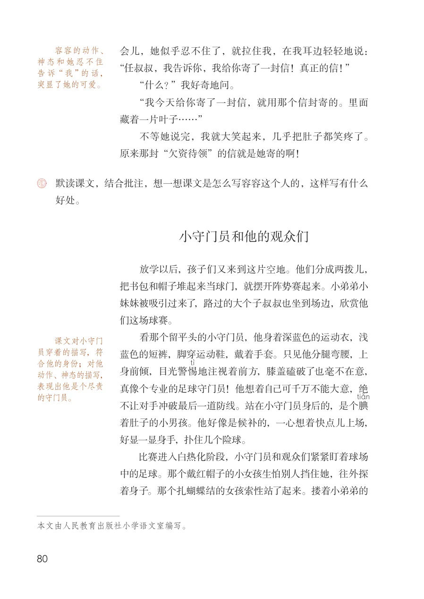
“红领巾”可能来迟了，他坐在最边上，也全神贯注地注视着
局势的发展。不知谁家的漂亮白狗跟主人一块儿来了，它对
课文描写了观众的外貌、动作或神态，表现了他们不同的特点。
球赛没兴趣，正卧在场边闭目养神呢。
那个抱着洋娃娃的小女孩跟别人不大一样，腰挺得直直
的，脸上没有什么表情，好像胜负都跟她不相干。旁边的那
个戴帽子的小男孩却显得挺紧张，也许是头一回看到这样激
烈的球赛。
那位大个子叔叔始终面带笑容，看得津津有味。孩子
们踢得太精彩了，也许勾起了他小时候踢球的美好回忆。
象最深。
查看教材原页（保留全部图片、注音与原始排版）
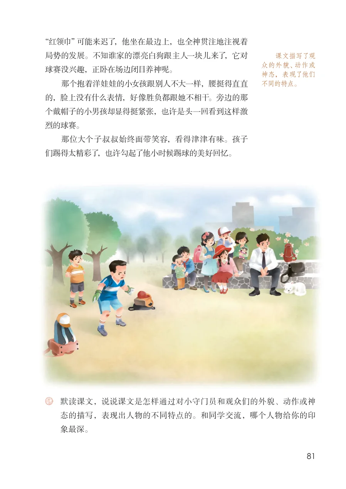
习 作
形形色色的人
我们每天都会接触到形形色色的人：小区里锻炼身体的爷爷奶奶，学校里的老师、同学，还有上学时遇到的公交车司机、维持秩序的交通警察……选择一个人写下来，运用本单元学过的描写人物的方法，具体地表现人物的特点。题目自拟。
写的时候，要选取典型的事例，如：
事例1 ：
事例2 ：
事书，能把所有的
天说过的一句话。
细节都记住。
事例4 ：
事例3 ：
看了一遍，就能一
的生日。
点儿不差地画下来。
事例1 和事例4最能表现叔叔记忆力超群的特点。
的意见进行修改。
查看教材原页（保留全部图片、注音与原始排版）
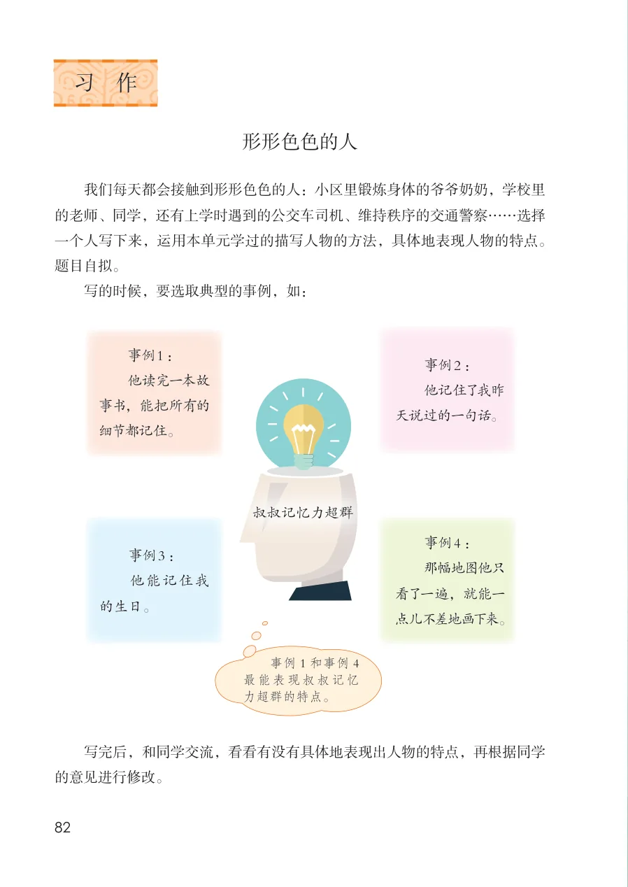
第6单元 · 思维与智慧：学习活动与拓展
第六单元
思维的火花跨越时空，
照亮昨天、今天和明天。
容的理解。
过程写具体。
查看教材原页（保留全部图片、注音与原始排版）
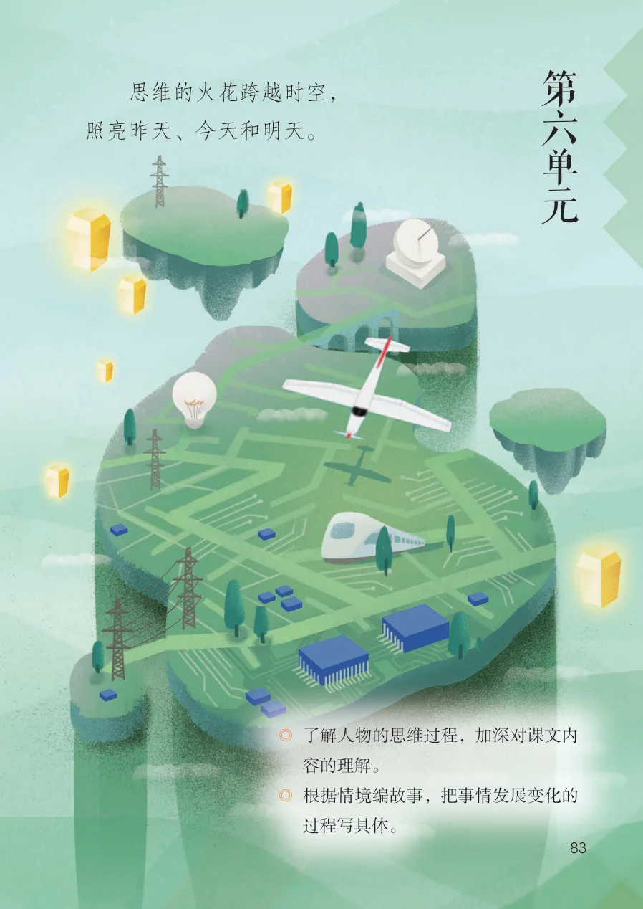
习 作
神奇的探险之旅
刺激的探险故事吧。
你希望和谁一同去探险？从下面两列人物中各选一个，和你一起组成一支
探险小队。
人物
你想去哪儿探险？打算带上哪些装备？可能会遇到什么险情？下面的提
示供你参考：
准备好了吗？快开始我们的探险之旅吧！
写的时候要展开丰富合理的想象，把遇到的困境、求生的方法写具体，如
果能把心情的变化写出来就更好了。
如果有兴趣，可以续编你的探险故事。
查看教材原页（保留全部图片、注音与原始排版）
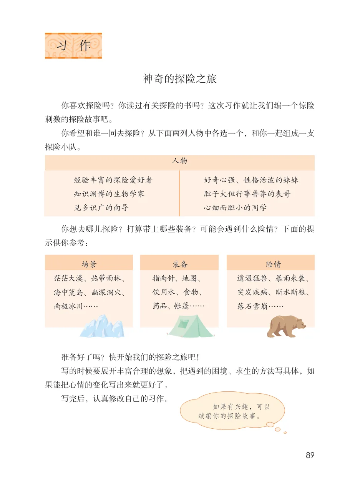
了解人物的思维过程，可以加深对课文内容的理解。
学习《田忌赛马》时，可以推测孙膑当时的思维过程。他先分
析了赛马双方的具体情况：田忌同齐威王及贵族们的马脚力相差不
多，而且都能分成上、中、下三等。于是，他想到可以通过合理安
排马的出场顺序，取得三局两胜的结果。通过这样的梳理，我们就
能理解孙膑为什么想出了这样的妙计。
学习《跳水》时，也可以推测船长是怎么想的。他知道孩子在
高高的横木上，无论是继续往前还是往回走，随时都有可能摔在硬
邦邦的甲板上。结合船上的各种情况，他立即决定用枪逼孩子跳
水，这也是当时唯一可行的办法。这样分析后，就能知道他的办法
好在哪里了。
我们在生活中遇到问题，也应该先分析当时的情况，再选择合
适的办法去解决。
查看教材原页（保留全部图片、注音与原始排版）
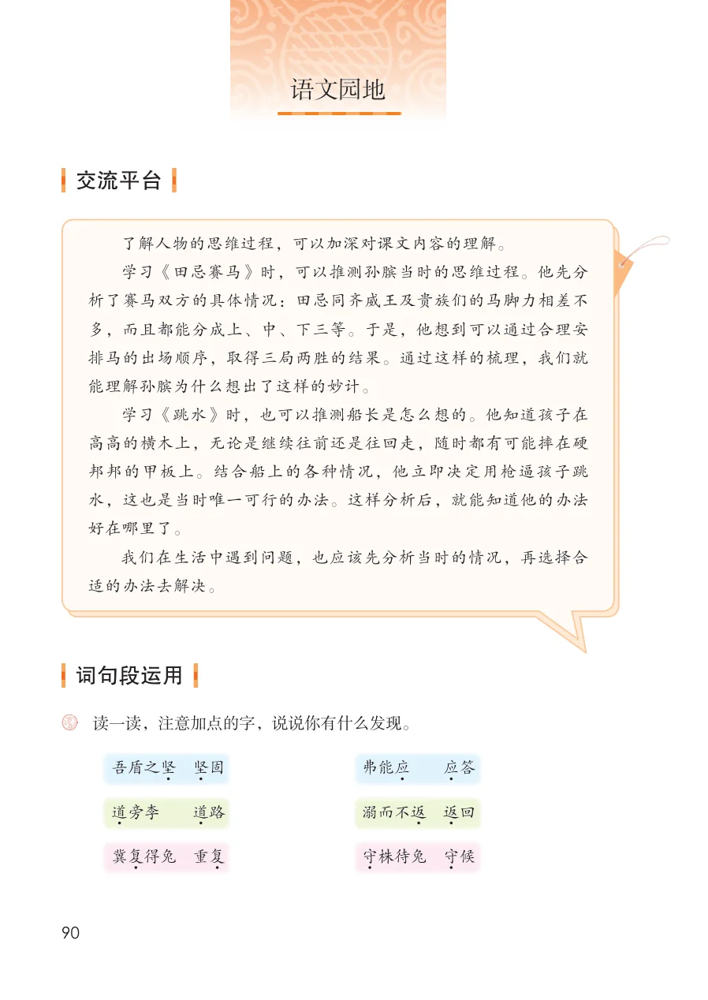
3 秒钟
3 —大家已经觉得时间
3 长
3 了
3 。等孩子一浮上来，水手们就立刻抓住了他，把他救上了甲板。
3 十
3 年
3 ，几
3 百
3 年
3 ，几
3 千
3 年
3 ，时间一转眼就过去了
3 。成千上万只绿翅膀
读一读，注意加点的部分，说一说自己类似的体验，再选择一种体验写
一写。
太
的苍蝇和八只脚的蜘蛛来了又去了。
下面的片段节选自叶圣陶先生为一位中学生修改的作文。读完后，你对叶
查看教材原页（保留全部图片、注音与原始排版）
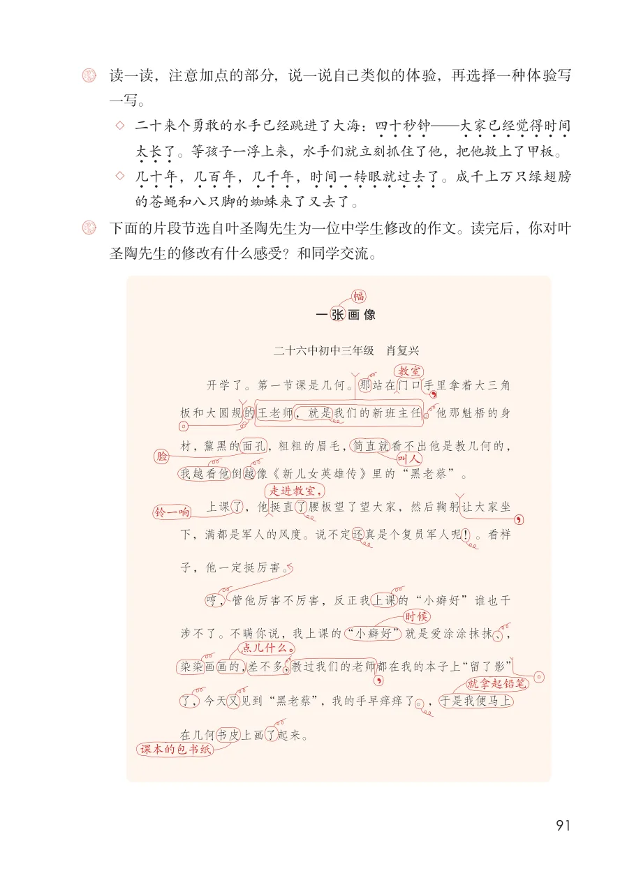
豆蔻年华：指女子十三四岁的年纪。
不惑：指人四十岁。
及笄：指女子年满十五岁。
花甲：指人六十岁。
弱冠：指男子二十岁左右的年纪。
古稀：指人七十岁。
而立：指人三十岁。
期颐：指人一百岁。
查看教材原页（保留全部图片、注音与原始排版）
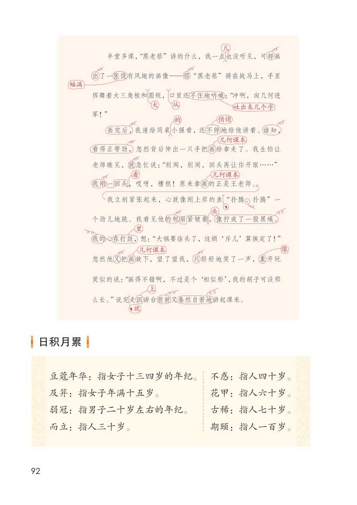
第7单元 · 世界风光：学习活动与拓展
第七单元
足下万里，移步换景，寰宇
纷呈万花筒。
查看教材原页（保留全部图片、注音与原始排版）
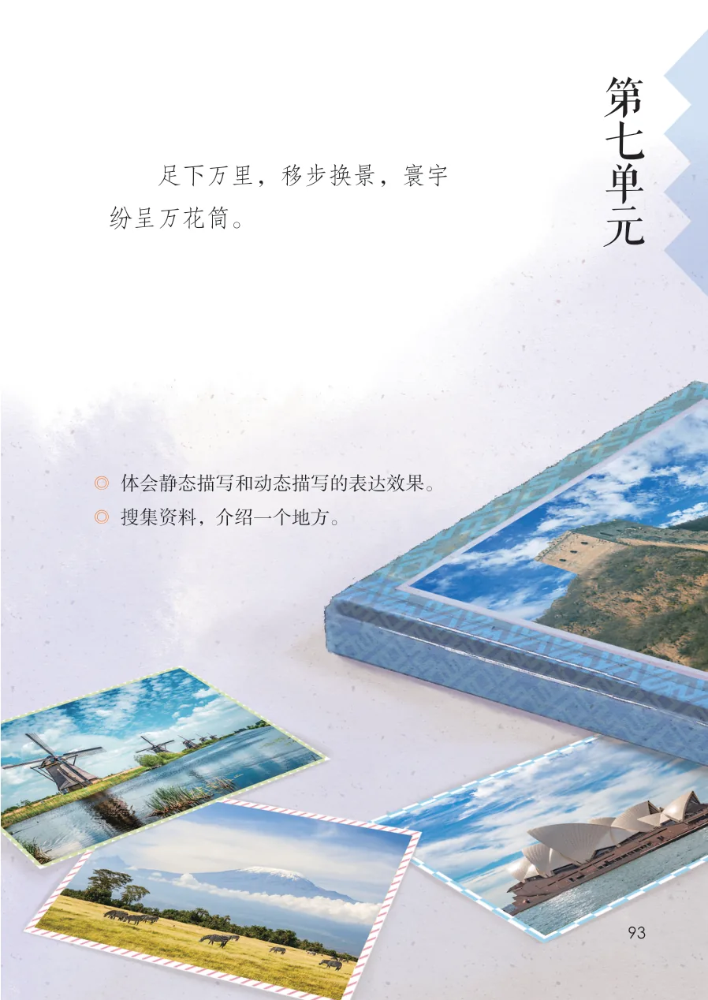
我是小小讲解员
学校来了客人，需要你讲解校园里有代表性的地方；亲友到你家做客，需
要你介绍一下周边的环境；暑假开始了，博物馆需要汉字文化讲解员， 社区征
集志愿者介绍垃圾分类知识……选择一个情境，做一名小小讲解员。
标注要讲的关键信息。
情辅助讲解。
不太感兴趣时，可以适当删减内容。
先讲给小组成员听，听的同学提出改进意见，还可以对不明白的地方提
出疑问。根据同学们的意见，改进自己的讲解。最后，小组推举代表在班上
讲解。
查看教材原页（保留全部图片、注音与原始排版）
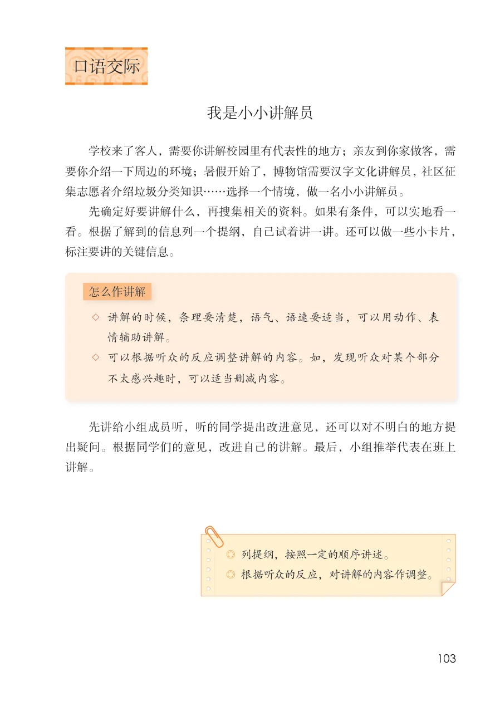
习 作
中国的世界文化遗产
你游览过宏伟的北京故宫吗？你知道美丽的敦煌莫高窟吗？你对秦始皇陵兵马俑感兴趣吗？这些令中国人骄傲的世界文化遗产，凝结着我们祖先的汗水和智慧。
从中国的世界文化遗产中，选择一处你感兴趣的介绍给别人。
的，记录历史变化的，讲述相关故事的。
的话，但要注明资料来源。
查看教材原页（保留全部图片、注音与原始排版）
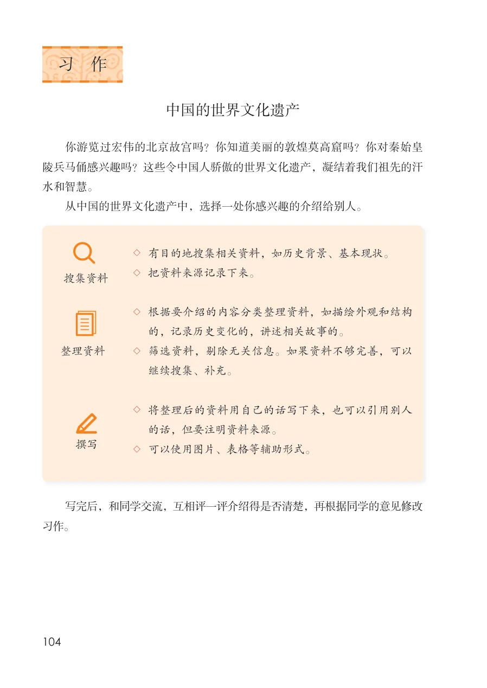
本单元的课文运用静态描写和动态描写，展示了世界
各地丰富多彩的美丽画卷。
《威尼斯的小艇》一文，描写了小艇在水面上灵活穿梭
的样子，体现了威尼斯的活力，还描写了威尼斯夜晚的情
景，表现了古老水城的静寂。
《牧场之国》一文，描写了荷兰牧场上动物们的悠闲和安
详，也描写了人们挤奶、运奶时的平和与从容，突显了荷兰
牧场的宁静之美。
恰当地运用静态描写和动态描写，能够呈现景物独特
的魅力。
下面的句子分别写出了景物的动、静之美，读一读，再选择一个情景，照
地都暗了下来。狗不叫了，圈里的牛也不再发出哞哞声，马也忘记了
踢马房的挡板。
查看教材原页（保留全部图片、注音与原始排版）
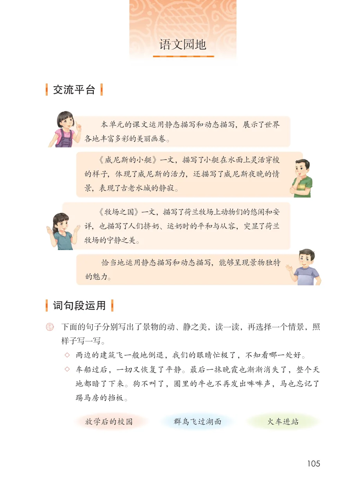
特点。
金光，而那古老的金字塔啊，简直像是用纯金铸成的。
纯白的大理石；陵墓是纯白的大理石，栏杆是纯白的大理石，四个高
塔也是纯白的大理石。你被裹在一片纯白的光辉中，仿佛给这个白色
的奇迹压住了，给这纯白的光辉网牢了。日积月累
绿遍山原白满川，
子规声里雨如烟。
乡村四月闲人少，
才了蚕桑又插田。
查看教材原页（保留全部图片、注音与原始排版）
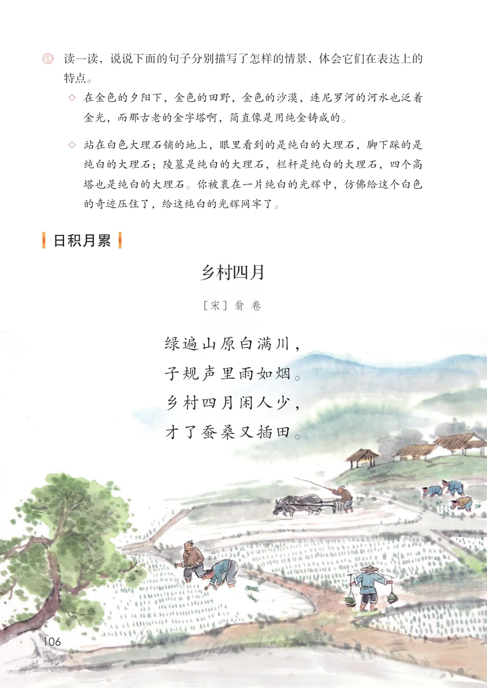
第8单元 · 语言的幽默与智慧：学习活动与拓展
第八单元
风趣和幽默是智慧的闪现。
查看教材原页（保留全部图片、注音与原始排版）
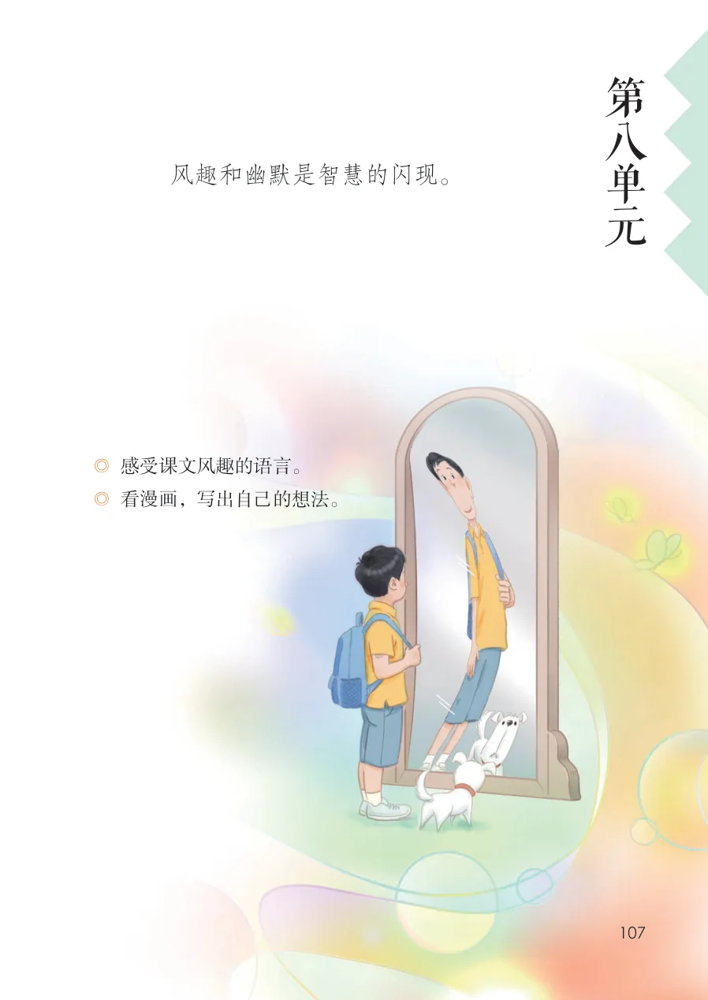
我们都来讲笑话
笑话给我们带来快乐，让我们都来讲笑话吧。
收集一些笑话，可以是从报纸、杂志上看到的，也可以是从别人那里听到
的。准备的笑话内容要积极向上。
讲笑话要注意什么呢？
看看效果，再根据家人的建议改进。
组织一次笑话大会，全班同学一起乐一乐。
查看教材原页（保留全部图片、注音与原始排版）
习 作
漫画的启示
漫画往往意味深长，能引发我们的思考。你能读懂下面这两幅漫画吗？从中获得了什么启示？
“你干什么？”“等着乘凉。”待业啄木鸟
择一幅来写，也可以写其他漫画。写的时候注意以下几点：
或事，思考漫画的含义，获得启示。
了，再根据同学的建议修改。
查看教材原页（保留全部图片、注音与原始排版）
本单元的课文很有特点，不仅内容有意思，而且语
言风趣幽默。
杨氏之子和孔君平的对话，利用姓氏的特点做文章，
你来我往，真是巧妙。
《手指》一文，作者用风趣的语言，展现了五个鲜明
的手指形象，让我们想到生活中类似的人。
《童年的发现》中的“我”被老师误会的时候，用自
我调侃的语言安慰自己，令人忍俊不禁。
膀右臂，片刻不离。
攀缘、穿行。
但在五指中，大拇指却是最肯吃苦的。例如拉胡琴，总由其他四指按
弦，却叫他相帮扶住琴身；水要喷出来，叫他死力抵住；血要流出来，叫
他拼命按住；重东西要翻倒去，叫他用劲顶住；要读书了，叫他翻书页；
要进门了，叫他揿电铃。
查看教材原页（保留全部图片、注音与原始排版）
书写提示
颜真卿是唐代著名的书法家，是楷书四大家之一。他的楷书具有恢宏
雄壮、大气磅礴的特点。人们常说的“颜筋柳骨”中的“颜筋”，就是形
容他的书法筋肉丰满，浑厚有力。《颜勤礼碑》是其代表作之一。
逾岷将军太宗为秦王精
序君自作后加
——《论语》
——《论语》
——《孟子》
——《左传》
——《朱子语类》
查看教材原页（保留全部图片、注音与原始排版）
识 字 表
昼
耘
供
稚
漪
蚱
啃
樱
蚌
割
嘟
倭
拴
啰
逛
徘
徊
渺
篝
萌
澄
澈
旖
旎
瑞
莱
垠
顷
识字表中蓝色的字是多音字，不计入生字总数。
查看教材原页（保留全部图片、注音与原始排版）
10 彭
11 沃
12 筹
拟
谋
赴
殊
踌
躇
黯
革
匪
绷
衷
堪
矜
俘
镯
吓
裆
企
彼
褂
坞13 嘎
绊
揪
扳
腕
铸
颧
疤
监
侄
痰
揩14 傅
袱
蘸
圣
馅
诈
怔
查看教材原页（保留全部图片、注音与原始排版）
1 昼耘桑晓
写 字 表
2 蝴蚱嗡樱榆拔瞎铲锄割尾承拴瓢逛
5 妒忌曹督委鲁遮疑惑寨擂呐插
6 冈饥碟斤俺榜杖申兼勿拖悉坠膛截
查看教材原页（保留全部图片、注音与原始排版）
21 梁聪诣禽
22 拇搔痒秽轧拧螺纽扣貌仓渺享庸憎
（共180个字）
查看教材原页（保留全部图片、注音与原始排版）
2 蝴蝶 蜻蜓 蚂蚱 圆滚滚 明晃晃 樱桃 榆树
词 语 表
瞎闹 锄头 承认 随意
5 妒忌 委托 照办 预计 紧急 军令状 探听
疑惑 私自 布置 调度 呐喊 神机妙算
查看教材原页（保留全部图片、注音与原始排版）
16 赏识 脚力 胸有成竹 摩拳擦掌 跃跃欲试
17 航行 风平浪静 取乐 放肆 桅杆 哭笑不得
兴致勃勃 出谋划策 引荐
眼巴巴 吓唬 船舱 海鸥 瞄准 心惊胆战18 纵横 船艄 垫子 操纵 手忙脚乱 保姆 簇拥沉寂 停泊 码头 笼罩
查看教材原页（保留全部图片、注音与原始排版）
后记与封底
后 记
《义务教育教科书 语文》（一〜六年级）由教育部组织编写，北京大学中
文系温儒敏教授担任总主编。
王宁、张联荣、柳士镇、张健、翟京华、郑桂华、陈秀玲、武琼、陈萍等
对教科书的修改完善给予了悉心指导；金波、李明新、陈双新、吴立岗、张立
霞、常志丹、杨祎等多次审阅教科书内容，提出了修改建议；在教育部的组织下，
广大一线优秀教师通读教科书，保证了教学的适切性；在试教试用过程中，北
京市、浙江省、宁夏回族自治区等地教研部门及部分学校给予了大力支持，为
教科书质量的进一步提升提供了保障。
人民教育出版社承担了教科书的编辑出版工作，在组织编写、试教试用等
方面给予了全方位的协助。人民教育出版社小学语文室全体同仁始终是教科书
编写的中坚力量。黄晨靓、孙楠、查家伍、黄晓莹为本书绘制插图，景绍宗
为本书封面绘制插图。卢中南为本书“书写提示”栏目书写了硬笔书法范例。
对教科书的编写、出版提供过帮助的同仁和社会各界朋友还有很多，在此一并
表示诚挚的谢意。
教科书投入使用后，我们根据各方意见作了修订，真诚希望广大师生和家
长继续提出宝贵意见！
电 话：010-58758601
电子邮箱：jcfk@pep.com.cn
查看教材原页（保留全部图片、注音与原始排版）
®
五年级 下册语文
定价： 元